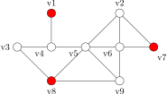

Public-Key-Kryptographie#
Obwohl es grundsätzlich möglich ist, mit dem One-Time-Pad eine sichere Verschlüsselung zu realisieren, ist dieses Verfahren in der Realität kaum praktikabel. Neben der Tatsache, dass der Schlüssel mindestens so lang sein muss, wie die Nachricht selbst, braucht es ein Verfahren den, bzw. die Schlüssel sicher zwischen Sender und Empfänger zu teilen.
Um das Problem des Schlüsselaustausches zu lösen, verwendet man spezielle mathematische Funktionen. Diese Funktionen nennt man “Einwegfunktionen mit Hintertüren”. Eine Einwegfunktion \(f(x) = x'\) lässt sich leicht berechnen, aber ihre Umkehrung \(f^{-1}(x') = x\) ist sehr schwierig zu berechnen. Die “Hintertür” ist ein Geheimwissen, mit dem die Umkehrfunktion dann doch einfach berechnet werden kann.
Die Einwegfunktion kann veröffentlicht werden, damit ein Absender mit deren Hilfe eine Botschaft verschlüsseln kann. Nur der Empfänger ist dann noch in der Lage, die Botschaft mit wenig Aufwand zu entschlüsseln. Allfällige ‘Lauscher’ können die Umkehrfunktion nicht innert nützlicher Frist berechnen.
Weil Text als Zahlenfolge dargestellt werden kann, eignen sich mathematische Funktionen besonders gut für die Verschlüsselung von Texten. Im folgenden soll ein Modell für ein solches Verschlüsselungsverfahren vorgestellt werden.
Verschlüsselung mit Hilfe eines Graphen#
Ein Graph besteht aus Knoten und Kanten. Die Knoten sind durch Kanten miteinander verbunden. Damit die Verschlüsselung mit Hilfe eines Graphen erfolgen kann, muss der Graph öffentlich bekannt und die Knoten Nummeriert sein. Die Verschlüsselung erfolgt in den unten dargestellten Schritten.
Der Klartext wird als Folge von Zahlen dargestellt, welche folgendermassen verschlüsselt werden:
Die einzelnen Zahlen der Zahlenfolge werden in Summanden zerlegt. Die Zahl der Summanden entspricht der Anzahl der Knoten im Graphen.
Jeder Summand wird einem Knoten zugeordnet.
Der ‘Wert’ eines Knotens berechnet sich als Summe des dem Knoten zugeordneten Summanden und allen Summanden der Nachbarknoten.
Der verschlüsselte Wert der Zahl ist die Folge der Werte der Knoten.
Das Vorgehen soll an einem Beispiel verdeutlicht werden. Dem Beispiel liegt der folgende Graph zu Grunde.
In diesem Graphen wird die Zahl 999 verschlüsselt. Die Aufteilung in Summanden sieht folgendermassen aus:
Die Summanden werden folgendermassen in den Graphen eingetragen:
Nach der Addition der Nachbarn, stellt sich der Graph folgendermassen dar:

Der verschlüsselte Wert kann jetzt als Zahlenfolge 123/570/229/426/827/770/306/570/627 übermittelt werden.
Um die ursprüngliche Zahl zu rekonstruieren, muss ein unberechtigter Lauscher das folgende Gleichungssystem lösen:
Wobei \(c_n\) die jeweilige übermittelte Zahl und \(v_n\) der Summand im jeweiligen Knoten darstellt. Dieses Gleichungssystem ist noch innerhalb nützlicher Frist lösbar. Wenn der Graph aber grösser wird, stösst man bald an zeitliche Grenzen.
Viel einfacher ist die Lösung, wenn man den Graphen in seine dominierende Menge zerlegt. Eine dominierende Menge unterteilt den Graphen in Subgraphen. Dies so, dass innerhalb des Subgraphen die untereinander verbundenen Knoten mit einem einzigen Knoten verbunden sind.
Definition Dominierende Menge#
Eine dominierende Menge in einem Graphen ist eine Teilmenge von Knoten mit einer besonderen Eigenschaft: Jeder Knoten des Graphen, der nicht zu dieser Teilmenge gehört, ist mit mindestens einem Knoten aus dieser Teilmenge verbunden. Anders ausgedrückt: Von den Knoten der dominierenden Menge aus kann man jeden anderen Knoten des Graphen mit genau einem Schritt erreichen.

Die Kenntnis der dominierenden Menge stellt in unserem Verschlüsselungsverfahren die “Hintertür” dar. Wer diese Menge kennt, kann das komplizierte Gleichungssystem umgehen und die ursprünglichen Werte deutlich einfacher rekonstruieren.
In den Knoten \(v_1\), \(v_7\) und \(v_8\) sind alle Summanden enthalten. Um die ursprüngliche Zahl zu rekonstruieren, reicht es also, die Werte dieser drei Knoten zu summieren. Das finden der dominierenden Menge ist aber ein schwierig zu lösendes Problem und stellt daher für den Lauscher eine unüberwindbare Schranke dar[1].